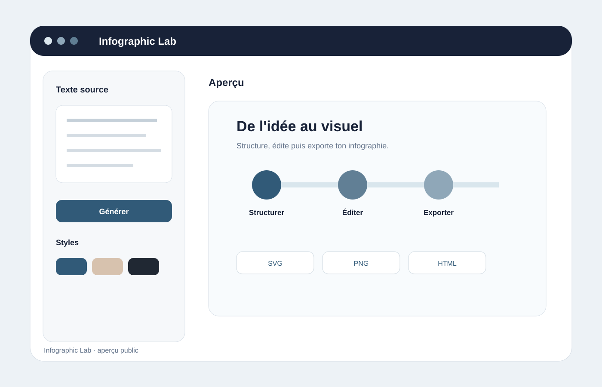
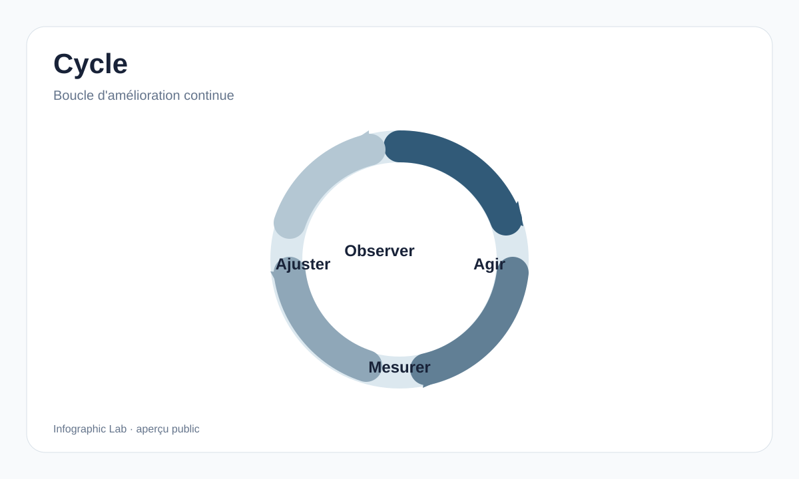

IA cadrée
Vibe ne dessine pas la page : il produit une structure JSON courte et contrôlée. La passerelle locale la valide avant tout rendu.
LOCAL-FIRST · VIBE · ANTV · 1.0.0
Du texte à une infographie éditable : l'IA structure l'information, l'application valide le JSON, puis le rendu et l'édition restent sous contrôle local.

Studio local · édition visuelleOVERVIEW
Le processus complet n'est plus répété ailleurs sur la page : cette infographie résume la séparation entre structuration IA, validation, rendu local, édition et export.

CAPABILITIES
Vibe ne dessine pas la page : il produit une structure JSON courte et contrôlée. La passerelle locale la valide avant tout rendu.
AntV Infographic ou le moteur SVG local transforme la structure validée en visuel, sans confier à l'IA du HTML ou du SVG libre.
Titres, blocs, ordre, pictogrammes, couleurs et densité restent modifiables localement sans nouvel appel IA.
VISUAL SYSTEM
La V1 privilégie un catalogue court et exploitable plutôt qu'une galerie infinie.

INSTALL
Aucun compte Infographic Lab ni base de données ne sont nécessaires. Le runner Vibe reste derrière l'application sur le réseau Docker interne.
.env.example vers .env.MISTRAL_API_KEY..\START-INFOGRAPHIC-LAB.ps1 -Build.http://127.0.0.1:3091.INFOGRAPHIC LAB 1.0.0
Cette séparation garde l'expérience éditable, prévisible et compréhensible sans transformer le moteur IA en générateur de code visuel libre.